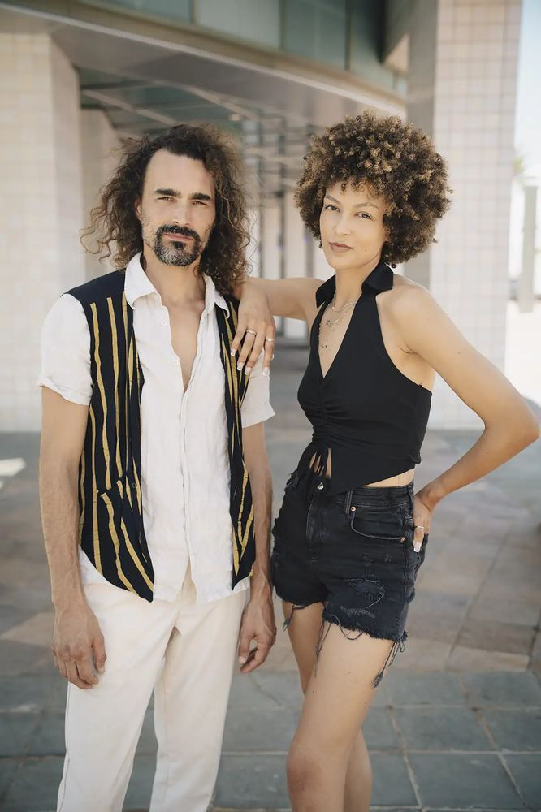

[EXEMPLE] par votre propre biographie, votre quartier exact de résidence ou vos spécifications matérielles réelles.

Je m'appelle Baya Hubert. Je passe mes journées à explorer Paris et sa région, mon appareil à la main, pour immortaliser ce qui rend vos projets, vos établissements et vos moments de vie uniques.
Mon parti pris artistique est simple et intransigeant : de vraies photographies, de vrais lieux, de vraies personnes. À l'heure où les algorithmes génèrent des images parfaites mais froides en série, je crois profondément que l'authenticité et la vérité d'un regard sont devenues les valeurs les plus précieuses.
Que je photographie l'effervescence d'un coup de feu en cuisine, l'alignement graphique de façades haussmanniennes, la complicité d'un couple sur les quais de Seine, ou le sérieux d'un séminaire d'entreprise, mon but reste le même : révéler la beauté naturelle de l'instant sans posture artificielle.
Parce que la créativité et la technique avancent main dans la main, je m'appuie sur une structure professionnelle rigoureuse pour garantir la qualité de mon travail.
Basé à Paris dans le [arrondissement / quartier, ex: 11ème], j'interviens quotidiennement dans toute la capitale ainsi que dans les départements limitrophes de l'Île-de-France (Hauts-de-Seine, Seine-Saint-Denis, Val-de-Marne). Des déplacements partout en France ou à l'étranger sont envisageables pour des reportages spécifiques ou des mariages sur mesure.
Je travaille exclusivement avec du matériel professionnel de dernière génération : boîtiers hybrides plein format (Full Frame) [Spécifier votre marque, ex: Sony/Canon] à double emplacement de cartes mémoire (sécurité maximale de vos données sur site), objectifs lumineux à grande ouverture pour capturer la beauté de la lumière naturelle, et une suite de post-traitement de pointe garantissant une colorimétrie fidèle et soignée.
La retouche fait partie intégrante de mon processus de création. Elle n'est pas là pour travestir la réalité, mais pour orienter le regard : travail minutieux sur la lumière, correction fine du contraste et accentuation des ambiances chaleureuses. Je n'utilise pas de filtres automatiques standardisés ; chaque photo sélectionnée bénéficie d'une retouche individuelle et personnalisée.
Une bonne photo est d'abord le fruit d'une bonne relation. Avant chaque séance (notamment pour les portraits professionnels ou les mariages), nous planifions un échange téléphonique ou autour d'un café pour ébaucher un "storyboard" ou un plan de prise de vue. Cette étape est cruciale pour vous mettre à l'aise et cerner précisément vos attentes.